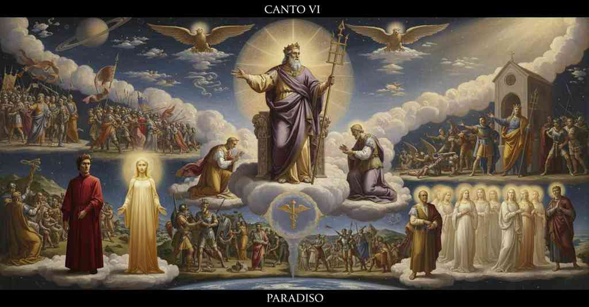

Paradiso — Canto 6

1
«Poscia che Costantin l’aquila volse
«After Constantine had turned the eagle
「コンスタンティヌスが鷲を向けた後、
2
contr’ al corso del ciel, ch’ella seguio
against the course of heaven, which it had followed
天の運行に逆らって、鷲はかつて
3
dietro a l’antico che Lavina tolse,
behind the ancient one who took Lavinia,
ラウィーナを娶った古人に従ったのだが、
4
cento e cent’ anni e più l’uccel di Dio
a hundred and a hundred years and more the bird of God
百年、そして百年以上も神の鳥は
5
ne lo stremo d’Europa si ritenne,
remained on the far edge of Europe,
ヨーロッパの果てに留まった、
6
vicino a’ monti de’ quai prima uscìo;
near the mountains from which it first came forth;
かつてそこから飛び立った山々の近くに。
7
e sotto l’ombra de le sacre penne
and under the shadow of the sacred wings
そして聖なる翼の影の下で
8
governò ’l mondo lì di mano in mano,
it governed the world there from hand to hand,
次から次へと世を治め、
9
e, sì cangiando, in su la mia pervenne.
and, so changing, it came down to mine.
そうして移り変わり、ついに私の手に渡った。
10
Cesare fui e son Iustinïano,
Caesar I was and am Justinian,
私はカエサルであった、そして今はユスティニアヌスである。
11
che, per voler del primo amor ch’i’ sento,
who, by the will of the first love that I feel,
私が感じる原初の愛の意志によって
12
d’entro le leggi trassi il troppo e ’l vano.
from within the laws drew out the excessive and the vain.
法の中から過剰で無駄なものを取り除いた者だ。
13
E prima ch’io a l’ovra fossi attento,
And before I was intent upon this work,
そして私がその事業に専心する以前は、
14
una natura in Cristo esser, non piùe,
one nature to be in Christ, and no more,
キリストには一つの本性しかなく、それ以上ではないと
15
credea, e di tal fede era contento;
I believed, and with such faith I was content;
信じており、その信仰に満足していた。
16
ma ’l benedetto Agapito, che fue
but the blessed Agapetus, who was
しかし、祝福されしアガピトゥスが、彼は
17
sommo pastore, a la fede sincera
supreme pastor, to the sincere faith
至高の牧者であったが、真の信仰へと
18
mi dirizzò con le parole sue.
directed me with his words.
その言葉で私を導いた。
19
Io li credetti; e ciò che ’n sua fede era,
I believed him; and what was in his faith,
私は彼を信じた。そして彼の信仰にあったものを、
20
vegg’ io or chiaro sì, come tu vedi
I now see so clearly, as you see
私は今や明確に見ている、そなたが
21
ogni contradizione e falsa e vera.
every contradiction is both false and true.
矛盾する命題の偽と真を見分けるように。
22
Tosto che con la Chiesa mossi i piedi,
As soon as with the Church I moved my feet,
教会と共に歩みを進めるやいなや、
23
a Dio per grazia piacque di spirarmi
by grace it pleased God to inspire in me
神は恩寵をもって、私に霊感を与えたもうた
24
l’alto lavoro, e tutto ’n lui mi diedi;
the high labor, and I gave myself all to it;
その大事業に、そして私はそれに全身全霊を捧げた。
25
e al mio Belisar commendai l’armi,
and to my Belisarius I commended the armies,
そして我がベリサリウスに武具を委ねた。
26
cui la destra del ciel fu sì congiunta,
to whom heaven’s right hand was so conjoined,
彼の右手には天の右手が固く結ばれていたので、
27
che segno fu ch’i’ dovessi posarmi.
that it was a sign that I should be at rest.
それは私が（武を）休むべきであるというしるしであった。
28
Or qui a la question prima s’appunta
Now here my answer to the first question comes to a point;
さて、ここで最初の問いに私の答えは
29
la mia risposta; ma sua condizione
but its nature
狙いを定める。だがその有り様が
30
mi stringe a seguitare alcuna giunta,
compels me to add a supplement,
私にいくつかの補足を続けさせるのだ、
31
perché tu veggi con quanta ragione
so that you may see with how much reason
おまえがいかに理不尽に
32
si move contr’ al sacrosanto segno
he moves against the most holy sign,
聖なる印に逆らい動く者、
33
e chi ’l s’appropria e chi a lui s’oppone.
both he who appropriates it and he who opposes it.
それを我が物とする者と、それに敵対する者を見るために。
34
Vedi quanta virtù l’ha fatto degno
See what great virtue has made it worthy
見よ、いかなる徳がそれをふさわしくしたかを
35
di reverenza; e cominciò da l’ora
of reverence; and it began from the hour
敬意に。それはパッランテがそれに王国を
36
che Pallante morì per darli regno.
that Pallas died to give it a kingdom.
与えるために死んだ時から始まった。
37
Tu sai ch’el fece in Alba sua dimora
You know it made its dwelling in Alba
おまえは知る、それがアルバ・ロンガにその住まいを置いたことを
38
per trecento anni e oltre, infino al fine
for three hundred years and more, until the end
三百年、さらにそれ以上、ついに
39
che i tre a’ tre pugnar per lui ancora.
when the three fought the three for it again.
三対三がなおも彼のために戦うまで。
40
E sai ch’el fé dal mal de le Sabine
And you know what it did from the wrong of the Sabines
そしておまえは知る、それがサビニの女たちの陵辱から
41
al dolor di Lucrezia in sette regi,
to the grief of Lucretia under seven kings,
ルクレツィアの悲しみまで七人の王の下で為したことを、
42
vincendo intorno le genti vicine.
conquering the neighboring peoples all around.
周囲の民を打ち負かしながら。
43
Sai quel ch’el fé portato da li egregi
You know what it did, borne by the great
おまえは知る、それが高貴なる
44
Romani incontro a Brenno, incontro a Pirro,
Romans against Brennus, against Pyrrhus,
ローマ人たちによって運ばれ、ブレンヌスに、ピュロスに、
45
incontro a li altri principi e collegi;
against the other princes and leagues;
他の君主や同盟に立ち向かって為したことを。
46
onde Torquato e Quinzio, che dal cirro
whence Torquatus and Quinctius, who from his neglected lock
そこからトルクァトゥスとクィンクティウス、顧みられぬ巻き毛から
47
negletto fu nomato, i Deci e ’ Fabi
was named, the Decii and the Fabii
名付けられた者、デキウス家とファビウス家は
48
ebber la fama che volontier mirro.
had the fame that I gladly admire.
私が喜んで見つめる名声を得たのだ。
49
Esso atterrò l’orgoglio de li Aràbi
It struck down the pride of the Arabs
それは、ハンニバルの後を追って
50
che di retro ad Anibale passaro
who behind Hannibal crossed
アルプスの岩山を越えたアラブ人たちの傲慢を打ち砕いた、
51
l’alpestre rocce, Po, di che tu labi.
the alpine rocks, Po, from which you flow.
おまえが流れ下るポー川よ。
52
Sott’ esso giovanetti trïunfaro
Under it, as young men, triumphed
その下で若きスキピオとポンペイウスは勝利を収めた。
53
Scipïone e Pompeo; e a quel colle
Scipio and Pompey; and to that hill
そしておまえがその麓に
54
sotto ’l qual tu nascesti parve amaro.
under which you were born it seemed bitter.
生まれたあの丘には、それは苦々しく思われた。
55
Poi, presso al tempo che tutto ’l ciel volle
Then, near the time when all of heaven willed
やがて、すべての天が望んだ時に
56
redur lo mondo a suo modo sereno,
to bring the world to its own serene way,
世をその穏やかな様に戻そうと、
57
Cesare per voler di Roma il tolle.
Caesar by the will of Rome took it.
カエサルはローマの意志によってそれを取る。
58
E quel che fé da Varo infino a Reno,
And what it did from the Var to the Rhine,
そしてそれがヴァル川からライン川まで為したことは、
59
Isara vide ed Era e vide Senna
Isère saw and Hérault and Seine saw
イゼール川は見た、アラール川も、セーヌ川も見た、
60
e ogne valle onde Rodano è pieno.
and every valley whence the Rhône is full.
そしてローヌ川を満たすすべての谷も見た。
61
Quel che fé poi ch’elli uscì di Ravenna
What it did after it left Ravenna
それがラヴェンナを出て
62
e saltò Rubicon, fu di tal volo,
and leaped the Rubicon, was of such a flight,
ルビコン川を跳び越えた後に為したことは、かくも飛翔し、
63
che nol seguiteria lingua né penna.
that neither tongue nor pen could follow it.
舌も筆もそれには追いつけなかっただろう。
64
Inver’ la Spagna rivolse lo stuolo,
Toward Spain it turned its host,
スペインへ向けて軍団を転じ、
65
poi ver’ Durazzo, e Farsalia percosse
then toward Dyrrachium, and struck Pharsalus
次いでドゥラッツォへ、そしてファルサリアを打ちのめし
66
sì ch’al Nil caldo si sentì del duolo.
so hard that the pain was felt at the hot Nile.
暑いナイル川までその悲しみが感じられたほどに。
67
Antandro e Simeonta, onde si mosse,
Antandros and Simois, whence it set out,
アンタンドロスとシモエイス川、それが来た場所を
68
rivide e là dov’ Ettore si cuba;
it saw again, and there where Hector lies;
再訪し、ヘクトルが横たわるその場所を。
69
e mal per Tolomeo poscia si scosse.
and then for Ptolemy's sake it roused itself for ill.
そしてプトレマイオスのためには悪しく身を震わせた。
70
Da indi scese folgorando a Iuba;
From there it descended like lightning on Juba;
そこから稲妻のごとくユバへと下り、
71
onde si volse nel vostro occidente,
whence it turned into your west,
次いでおまえたちの西方へ転じた、
72
ove sentia la pompeana tuba.
where it heard the Pompeian trumpet.
そこでポンペイウスの喇叭が聞こえた。
73
Di quel che fé col baiulo seguente,
Of what it did with the next standard-bearer,
それが次の旗手と共に為したことについては、
74
Bruto con Cassio ne l’inferno latra,
Brutus and Cassius howl in Hell,
ブルートゥスはカッシウスと共に地獄で吠え、
75
e Modena e Perugia fu dolente.
and Modena and Perugia were mournful.
そしてモデナとペルージャは嘆き悲しんだ。
76
Piangene ancor la trista Cleopatra,
For this the sad Cleopatra still weeps,
悲しきクレオパトラは今なおそれを嘆き、
77
che, fuggendoli innanzi, dal colubro
who, fleeing before it, from the serpent
彼から逃げる途中、毒蛇から
78
la morte prese subitana e atra.
took a sudden and dark death.
突然の暗い死を得たのだ。
79
Con costui corse infino al lito rubro;
With him it ran as far as the Red shore;
彼と共に紅い岸辺まで走り、
80
con costui puose il mondo in tanta pace,
with him it put the world in such peace
彼と共に世をかくも平和にし、
81
che fu serrato a Giano il suo delubro.
that the temple of Janus was closed.
ヤヌスにはその神殿が閉ざされた。
82
Ma ciò che ’l segno che parlar mi face
But that which the sign that makes me speak
しかし、私に語らせるその印が
83
fatto avea prima e poi era fatturo
had done before and then was to do
以前に為し、後に為すであろうことは
84
per lo regno mortal ch’a lui soggiace,
for the mortal kingdom that is subject to it,
それに服従する定命の王国にとって、
85
diventa in apparenza poco e scuro,
becomes in appearance small and obscure,
見かけは小さく暗いものとなる、
86
se in mano al terzo Cesare si mira
if it is seen in the hand of the third Caesar
もし第三のカエサルの手にあるのを
87
con occhio chiaro e con affetto puro;
with a clear eye and with pure feeling;
澄んだ目と純粋な心情で見るならば。
88
ché la viva giustizia che mi spira,
for the living justice that inspires me
なぜなら、私に霊感を与える生ける正義が、
89
li concedette, in mano a quel ch’i’ dico,
granted to it, in the hand of the one I speak of,
彼に、私の語るその者の手に、
90
gloria di far vendetta a la sua ira.
the glory of taking vengeance for its wrath.
その怒りの復讐を為す栄光を授けたからだ。
91
Or qui t’ammira in ciò ch’io ti replìco:
Now marvel here at what I unfold to you:
さあ、ここで私が繰り返すことに驚くがよい。
92
poscia con Tito a far vendetta corse
afterward it ran with Titus to take vengeance
その後ティトゥスと共に、古の罪の復讐への
93
de la vendetta del peccato antico.
for the vengeance of the ancient sin.
復讐を為しに走ったのだ。
94
E quando il dente longobardo morse
And when the Lombard tooth bit
そしてロンゴバルドの牙が
95
la Santa Chiesa, sotto le sue ali
the Holy Church, under its wings
聖なる教会を噛んだとき、その翼の下で
96
Carlo Magno, vincendo, la soccorse.
Charlemagne, conquering, came to her aid.
カール大帝は、勝利して、それを救ったのだ。
97
Omai puoi giudicar di quei cotali
Now you can judge of those certain men
今や汝はかの者どもを判断できよう
98
ch’io accusai di sopra e di lor falli,
whom I accused above and of their failings,
私が上で非難した者どもとその過ちを、
99
che son cagion di tutti vostri mali.
which are the cause of all your evils.
それらが汝らの全ての悪しき事の原因なのだ。
100
L’uno al pubblico segno i gigli gialli
The one opposes the yellow lilies to the public sign,
一方は公の印に黄色い百合を
101
oppone, e l’altro appropria quello a parte,
and the other appropriates it for his party,
対置し、他方はそれを党派のために私物化する、
102
sì ch’è forte a veder chi più si falli.
so that it is hard to see who errs the more.
故にどちらがより過ちを犯しているか見定めるのは難しい。
103
Faccian li Ghibellin, faccian lor arte
Let the Ghibellines, let them practice their art
ギベリン党よ、その企てを行うがよい
104
sott’ altro segno, ché mal segue quello
under another sign, for he follows it ill
別の印の下で。なぜなら、それを悪しく追う者は
105
sempre chi la giustizia e lui diparte;
whoever separates justice and it;
常に正義と彼とを分かつ者なのだから。
106
e non l’abbatta esto Carlo novello
and let not this new Charles strike it down
そして、この新しきシャルルがそれを打ち倒すことなかれ
107
coi Guelfi suoi, ma tema de li artigli
with his Guelphs, but let him fear the claws
そのグエルフ党と共に。だが、かの鉤爪を恐れよ
108
ch’a più alto leon trasser lo vello.
that tore the hide from a mightier lion.
それはより高き獅子の毛皮を剥ぎ取ったのだ。
109
Molte fïate già pianser li figli
Many times already have sons wept
すでに幾度も子らは泣いた
110
per la colpa del padre, e non si creda
for the fault of the father, and let it not be thought
父の罪のために。そして信ずるべからず
111
che Dio trasmuti l’armi per suoi gigli!
that God will change His arms for their lilies!
神がその百合のために紋章を変えるなどと！
112
Questa picciola stella si correda
This little star is adorned with
この小さな星は飾られている
113
d’i buoni spirti che son stati attivi
the good spirits who have been active
活動的であった善き魂たちによって
114
perché onore e fama li succeda:
so that honor and fame might follow them:
名誉と名声が彼らに続くようにと。
115
e quando li disiri poggian quivi,
and when desires aim in this direction,
そして、望みがそこを目指すとき、
116
sì disvïando, pur convien che i raggi
so deviating, it must be that the rays
このように道を逸れ、まことに真の愛の光は
117
del vero amore in sù poggin men vivi.
of true love rise upward less alive.
上へと向かう活気が少なくなるのは当然のこと。
118
Ma nel commensurar d’i nostri gaggi
But in the balancing of our rewards
だが我らの褒賞を功徳と
119
col merto è parte di nostra letizia,
with merit is part of our happiness,
釣り合わせることこそが、我らの喜びの一部なのだ、
120
perché non li vedem minor né maggi.
because we see them neither less nor more.
なぜなら我らはそれを小さくも大きくも見ないから。
121
Quindi addolcisce la viva giustizia
Wherefore the living justice sweetens
それゆえに、生ける正義は我らの内に
122
in noi l’affetto sì, che non si puote
in us our affection so, that it can never
愛情を甘美にする、故にいかなる邪悪にも
123
torcer già mai ad alcuna nequizia.
be turned aside to any wickedness.
決して捻じ曲げられることはない。
124
Diverse voci fanno dolci note;
Different voices make sweet notes;
様々な声が甘い楽の音を奏でるように、
125
così diversi scanni in nostra vita
so different ranks in our life
同じく我らの生における様々な階位が
126
rendon dolce armonia tra queste rote.
render sweet harmony among these wheels.
この天輪の間に甘き調和を生み出すのだ。
127
E dentro a la presente margarita
And within the present pearl
そしてこの今の真珠の中に
128
luce la luce di Romeo, di cui
shines the light of Romeo, whose
ロメオの光が輝いている、彼の
129
fu l’ovra grande e bella mal gradita.
great and beautiful work was ill-rewarded.
偉大で美しき業は悪しく評価された。
130
Ma i Provenzai che fecer contra lui
But the Provençals who worked against him
だが彼に敵対したプロヴァンス人たちは
131
non hanno riso; e però mal cammina
have not laughed; and thus he walks an evil path
笑うことはなかった。それゆえに悪しき道を歩むのだ
132
qual si fa danno del ben fare altrui.
who makes for himself harm from another’s good deed.
他人の善行によって自らに損害をなす者は。
133
Quattro figlie ebbe, e ciascuna reina,
Four daughters he had, and each a queen,
四人の娘がおり、それぞれが王妃となった、
134
Ramondo Beringhiere, e ciò li fece
Raymond Berenger, and this for him was done by
レーモン・ベランジェ4世は。そしてそれを為したのは
135
Romeo, persona umìle e peregrina.
Romeo, a humble and pilgrim person.
ロメオ、卑しく巡礼の身の者であった。
136
E poi il mosser le parole biece
And then sly words moved him
そして後に、彼を動かしたのは邪な言葉であった
137
a dimandar ragione a questo giusto,
to demand an accounting from this just man,
この正しき者に申し開きを求めるようにと、
138
che li assegnò sette e cinque per diece,
who rendered him seven and five for ten;
彼は彼に十に対して七と五を割り当てたというのに。
139
indi partissi povero e vetusto;
thence he departed, poor and old.
それから彼は去った、貧しく老いさらばえて。
140
e se ’l mondo sapesse il cor ch’elli ebbe
And if the world knew the heart he had
そしてもし世が知ったなら、彼が持っていた心を
141
mendicando sua vita a frusto a frusto,
begging his living crust by crust,
その命を一切れ一切れ乞いながら、
142
assai lo loda, e più lo loderebbe».
much as it praises him, it would praise him more.
大いに彼を称え、さらに称えるだろう」。